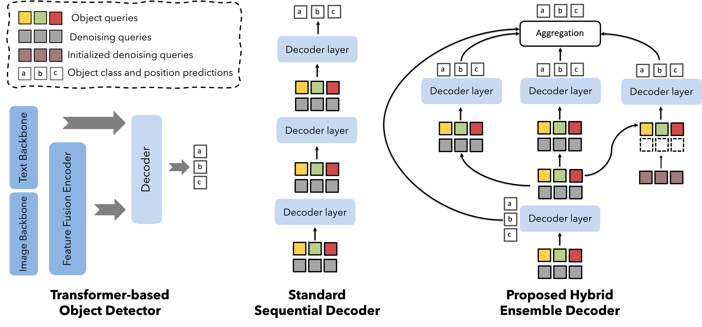
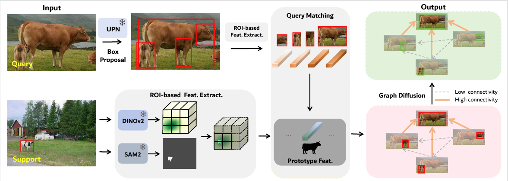
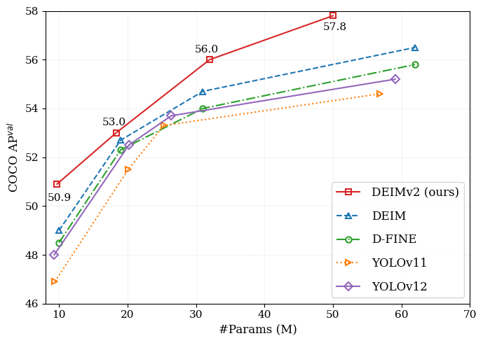
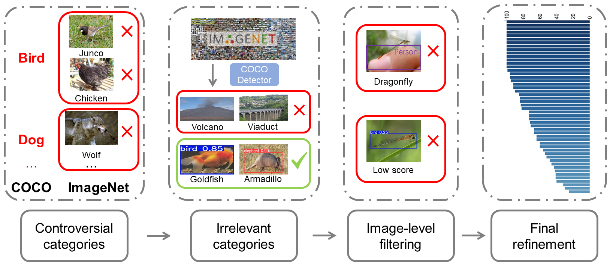

Available
Longfei Liu
AI Researcher & Algorithm Engineer
I obtained my master's degree in Applied Statistics from Guilin University of Electronic Technology. Together with Dr. Xi Shen, I focus on computer vision research, particularly edge-based vision algorithms for resource-constrained environments.
News
Mar 2026
EdgeCrafter is now available on arXiv, where it achieves state-of-the-art performance in real-time object detection, human pose estimation, and instance segmentation.
Sep 2025
We have released our technical report, DEIMv2, on arXiv, achieving state-of-the-art performance on the COCO detection.
Selected Research
* Equal contribution ‡ Project Lead + Corresponding author




Experience & Misc
Jul 2025: Joined Intellindust as an Algorithm Engineer, continuing to work with Dr. Xi Shen.
Dec 2023: Started internship at Intellindust, supervised by Dr. Xi Shen and Dr. Cheng Li.